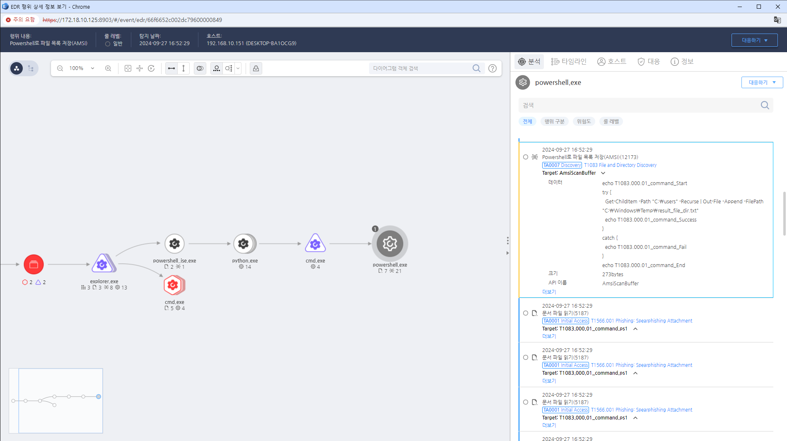

MITRE ATT&CK 액션을 기준으로 대응 방안을 작성
Get-ChildItem 명령 등의 파일 및 디렉토리를 순회하며 조회하는 행위를 탐지한다.
 https://172.18.10.125:8903/#/event/edr/66f6652c002dc79600000849
IDS/IPS를 사용하여 비정상적인 파일 및 디렉터리 탐색 활동을 실시간으로 감지하고 경고합니다.
시스템 및 애플리케이션 로그를 정기적으로 검토하여 의심스러운 파일 접근 패턴을 식별합니다.
의심스러운 파일 탐색이 감지된 시스템을 즉시 격리하여 추가 피해를 방지합니다.
파일 탐색 활동이 발견될 경우 즉각적인 사고 대응 절차를 실행하여 상황을 관리합니다.
시스템과 파일 구조를 정기적으로 점검하여 불필요한 파일이나 디렉터리를 식별하고 삭제합니다.
중요한 파일과 폴더에 대한 접근 권한을 최소화하고, 필요 시 암호화를 적용합니다.
탐색할 필요가 없는 서비스나 공유를 비활성화하여 공격 표면을 줄입니다.
직원들에게 파일 시스템 보안 및 접근 관리에 대한 교육을 실시하여 인식을 높입니다.
접근 권한 관리
네트워크 세분화
파일 및 디렉터리 암호화
불필요한 서비스 비활성화
정기적인 보안 감사
모니터링 및 로깅:
정책 수립 및 교육
침입 탐지 시스템(IDS) 사용
Action 실행시 함께 영향을 받는 다른 Techniqes
| ATT&CK |
|---|
| T1083.000 |
| T1074.001 |
| D3FEND |
|---|
| D3-FIM File Integrity Monitoring |
| D3-PM Platform Monitoring |
| D3-SCA System Call Analysis |